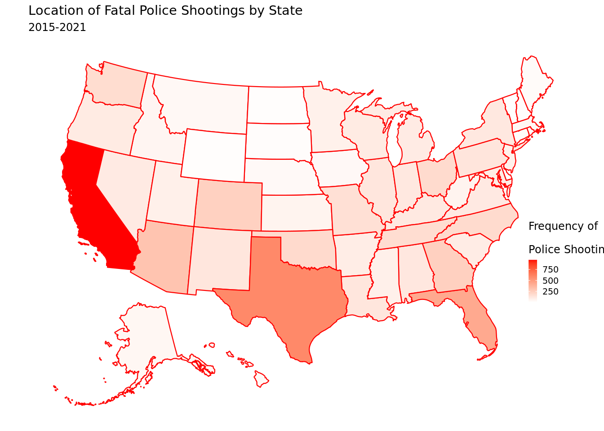
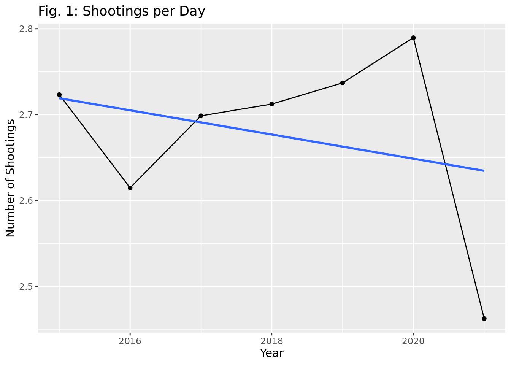
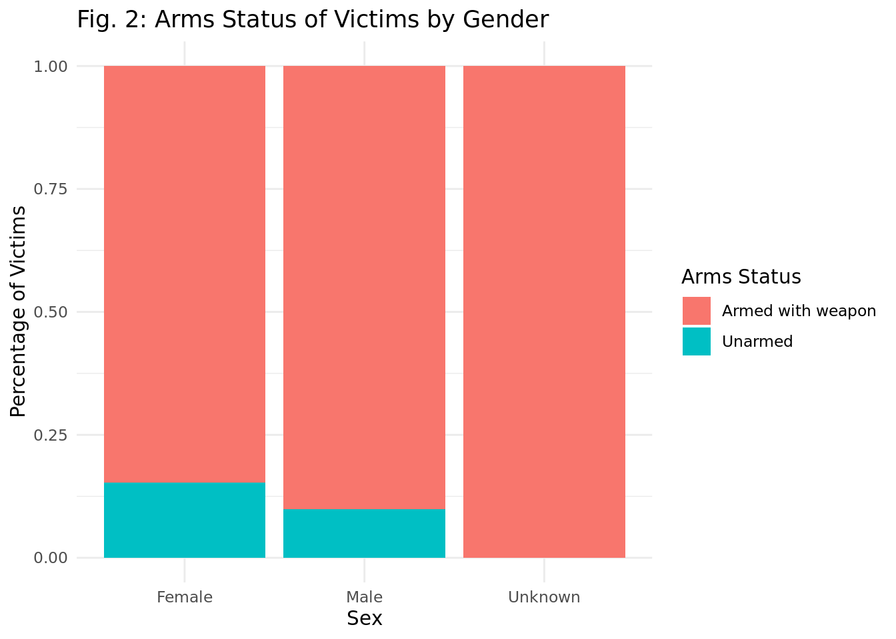
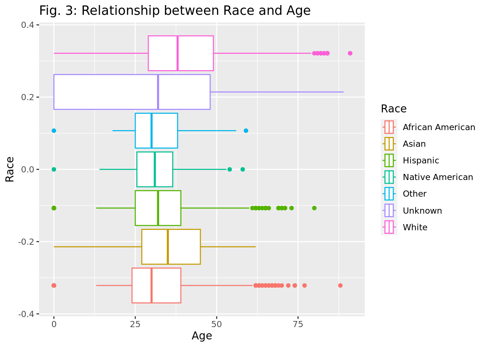
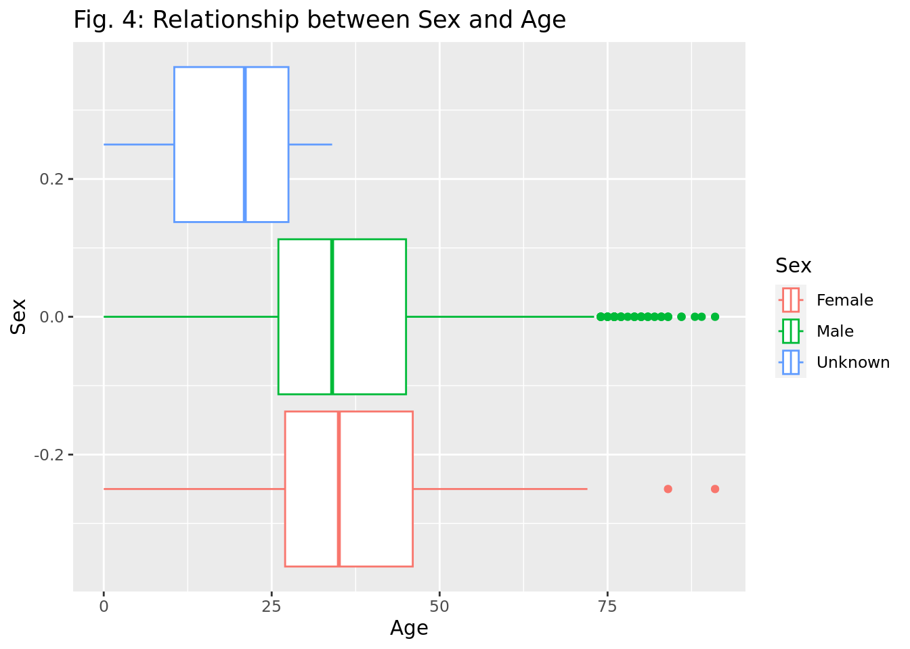

Rows: 6569 Columns: 16
── Column specification ────────────────────────────────────────────────────────
Delimiter: ","
chr (9): Person.Name, Person.Gender, Person.Race, Incident.Location.City, I...
dbl (4): Person.Age, Incident.Date.Month, Incident.Date.Day, Incident.Date....
lgl (2): Factors.Mental-Illness, Shooting.Body-Camera
date (1): Incident.Date.Full
ℹ Use `spec()` to retrieve the full column specification for this data.
ℹ Specify the column types or set `show_col_types = FALSE` to quiet this message.
Created on September 15, 2021, the police_shootings data set is sourced from the CORGIS Dataset Project and was compiled from findings by The Washington Post. The Washington Post regularly collects this data as police shootings happen by monitoring local news reports, law enforcement websites, social media, and independent databases such as Killed by Police and Fatal Encounters. When necessary, The Post did additional research to investigate each individual case.
This data set describes fatal shootings in the United States by a police officer in the line of duty from January 1, 2015, to September 11, 2021. Each observation represents a fatal shooting event by a police officer. This data includes information on the victim’s gender, race, mental illness, location, and date of the event.
In a Nature article titled “What the data say about police shootings,” Lynne Peeples explains that police officers in the United States fatally shoot about three people per day on average, a number that rivals the yearly totals of other wealthy nations. Data on these deadly encounters had been hard to come by, but five years later, newspapers, enterprising individuals, and the federal government have launched ambitious data-collection projects to fill the gaps and improve transparency and accountability over how police officers exercise their right to use deadly force. Social scientists and public health researchers have produced more than 50 publications to address pressing questions, such as whether the police are disproportionately quick to shoot black civilians and those from other minority groups.
New databases show that police officers' use of lethal force is much more common than previously thought and varies significantly across the country. We plan to track these differences to help identify opportunities to reduce the number of police shootings and deaths for both civilians and police officers.
Research question
How do race, gender, age, and whether a civilian was armed or not affect rates of police shootings across the United States from 2015 to 2021?
Data
Our data set includes 6569 rows, indicating that at least 6569 people were killed by police from 2015 to 2021. By discovering how different factors affect the number of shootings, we can begin to understand why these tragedies happen and what we can do to stop them from happening.
Our research topic examines police shooting history on the basis of race, gender, and age. We hypothesize that male individuals who identify as a POC are most likely to consist of the largest victim population.
Ethical Concerns
One ethical concern is the possibility of misinformation in the data and a lack of accurate reporting. Not every police shooting is reported or handled correctly. Although The Washington Post collected the data from many different sources, there is no way of guaranteeing that the data set is fully comprehensive.
Second, as demonstrated below, all 6,569 victims identified in this data set have been characterized as having a mental illness. As a result, we decide not to make a visualization based on the mental illness variable. We believe this would pose an ethical issue because mental health is a spectrum with varying characteristics and severity of impact. Having a mental illness cannot be reduced to a simple “TRUE” or “FALSE.” Instead, we decided that other variables would be a better focus.
sum(police_shootings$`Factors.Mental-Illness`)
[1] 6569
Finally, a third concern is consent and whether the victims families want their loved ones to have identifying information (like name and information about their death) in a public database. This is a highly sensitive topic and should be treated as such.
The following data was collected randomly and the observations are independent.
We have identified several key variables that will advance our research question: Person.Name - String (Categorical)
Person.Age - Integer (Quantitative)
Person.Gender - String (Categorical)
Person.Race - String (Categorical)
Incident.Date.Month - Integer (Categorical)
Incident.Date.Day - Integer (Quantitative)
Incident.Date.Year - Integer (Quantitative)
Incident.Date.Full - String (Categorical)
Incident.Location.City - String (Categorical)
Incident.Location.State - String (Categorical)
Factors.Armed - String (Categorical)
Factors.Mental-Illness - Boolean (Categorical)
Factors.Threat-Level - String (Categorical)
Factors.Fleeing - String (Categorical)
Shooting.Manner - String (Categorical)
Shooting.Body-Camera - Boolean (Categorical)
Methodology
The average age for a police shooting victim is 35; whereas, the median age is 34. We can conclude that the data is not central to 34-35 years of age as the standard deviation of the the victim’s age is ~15 years.
# A tibble: 6,569 × 17
Person.N…¹ Perso…² Perso…³ Perso…⁴ Incid…⁵ Incid…⁶ Incid…⁷ Incident…⁸ Incid…⁹
<chr> <dbl> <chr> <chr> <dbl> <dbl> <dbl> <date> <chr>
1 Tim Elliot 53 Male Asian 1 2 2015 2015-01-02 Shelton
2 Lewis Lee… 47 Male White 1 2 2015 2015-01-02 Aloha
3 John Paul… 23 Male Hispan… 1 3 2015 2015-01-03 Wichita
4 Matthew H… 32 Male White 1 4 2015 2015-01-04 San Fr…
5 Michael R… 39 Male Hispan… 1 4 2015 2015-01-04 Evans
6 Kenneth J… 18 Male White 1 4 2015 2015-01-04 Guthrie
7 Kenneth A… 22 Male Hispan… 1 5 2015 2015-01-05 Chandl…
8 Brock Nic… 35 Male White 1 6 2015 2015-01-06 Assaria
9 Autumn St… 34 Female White 1 6 2015 2015-01-06 Burlin…
10 Leslie Sa… 47 Male Africa… 1 6 2015 2015-01-06 Knoxvi…
# … with 6,559 more rows, 8 more variables: Incident.Location.State <chr>,
# Factors.Armed <chr>, `Factors.Mental-Illness` <lgl>,
# `Factors.Threat-Level` <chr>, Factors.Fleeing <chr>, Shooting.Manner <chr>,
# `Shooting.Body-Camera` <lgl>, state <chr>, and abbreviated variable names
# ¹Person.Name, ²Person.Age, ³Person.Gender, ⁴Person.Race,
# ⁵Incident.Date.Month, ⁶Incident.Date.Day, ⁷Incident.Date.Year,
# ⁸Incident.Date.Full, ⁹Incident.Location.City
library(usmap) library(ggplot2) data2 <- police_shootings |>mutate(state = Incident.Location.State) |>group_by(state) |>count() plot_usmap(data = data2, values ="n", regions ="states", color ="red") +scale_fill_continuous(low ="white", high ="red", name ="Frequency of \nPolice Shootings") +theme(legend.position =c(0.9, 0.3),legend.key.size =unit(.25, "cm")) +labs(title ="Location of Fatal Police Shootings by State",subtitle ="2015-2017")

As seen by the map, the majority of our data was collected in California. This could be a limitation to our data as it demonstartes biases.
In yearly-analysis, we chose to do a line graph to represent the progression of shooting per day over time as it effectively reveals trends and changes in shooting per day across the years.
yearly_shootings <- police_shootings |>group_by(Incident.Date.Year) |>count(Incident.Date.Year) days_in_year <-c(365, 366, 365, 365, 365, 366, 253)yearly_shootings |>ggplot(aes(x = Incident.Date.Year, y = n/days_in_year)) +geom_point() +geom_smooth(method = lm, se =FALSE) +geom_line() +labs(title ="Fig. 1: Shootings per Day",x ="Year", y ="Number of Shootings")
`geom_smooth()` using formula = 'y ~ x'

As seen by the graph below, ~10% of male victims and 13% of female victims were unarmed.
police_shootings |>filter(Factors.Armed !="unknown") |>mutate(Factors.Armed.Test =if_else( Factors.Armed =="unarmed"| Factors.Armed =="toy weapon", "unarmed", "armed with weapon")) |>ggplot(aes(x = Person.Gender, fill = Factors.Armed.Test)) +geom_bar(position ="fill") +labs(title ="Fig. 2: Arms Status of Victims by Gender",y ="% of Victims",x ="Sex",fill ="Arms Status")

We used box plots to visualize male versus female and race as it is the best way to show distributions of numeric data values between multiple groups. It made the differences in age between male and female victims and victims of different races very clear. We could compare the median, range, and outliers.
police_shootings |>ggplot(aes(x = Person.Age, y = Person.Race)) +geom_boxplot() +labs(title ="Fig. 3: Relationship between Race and Age",x ="Age",y ="Race",color ="Race")

police_shootings |>filter(Person.Gender !="Unknown") |>ggplot(aes(x = Person.Age, y = Person.Gender)) +geom_boxplot() +labs(title ="Fig. 4: Relationship between Sex and Age",x ="Age",y ="Sex",color ="Sex")

total <- police_shootings |>summarize(total =n()) |>pull(total)race_prop <- police_shootings |>group_by(Person.Race) |>summarize(prop =n()/total)#race_prop |>#ggplot(aes(y = prop, x = Person.Race, stat = "count")) + # geom_bar() + # labs(title = "Fig. 5: Number of Victims by Race",# x = "Race",# y = "Count",# fill = "Race") +# theme(axis.text.x = element_text(angle = 90, vjust = 0.5, hjust=1), #legend.position = "none")
police_shootings |>filter(Factors.Armed !="unknown") |>mutate(Factors.Armed.Test =if_else( Factors.Armed =="unarmed"| Factors.Armed =="toy weapon", "unarmed", "armed with weapon")) |>ggplot(aes(x = Person.Race, fill = Factors.Armed.Test)) +geom_bar(position ="fill") +labs(title ="Fig. 6: Arms Status of Victims by Race",y ="Proportion of Victims",x ="Race",fill ="Arms Status") +theme(axis.text.x =element_text(angle =90, vjust =0.5, hjust =1))
Where \(p\) is the probability of a person being a perceived threat by the police, stating the incident as an “attack.”
After fitting the logistic model and computing backwards elimination, we found the best model for our response variable (Factors.Threat.Level) to be an additive model between our four explanatory variables: gender, race, armed status, and age. During backwards elimination, we fit several additive and interactive models between the four variables and determined the lowest AIC value. Therefore, whether or not a victim was seen as a threat was explained with an additive interaction between gender, race, armed status, and age.
We will now investigate if the proportion of unarmed people who were shot by police is equal for victims of color in comparison to white victims. We hypothesize that the proportion of unarmed people of color shot is significantly greater than the proportion of unarmed white people. In order to investigate this hypothesis, we will perform a hypothesis test using a significance level of \(\alpha = 0.05\). For the hypothesis testing purposes, we will assume independence within our data set’s observations.
(Note: in the context of this question, we will consider someone as a “POC” if they do not identify as “White”)
\(\pi_{POC}\) = the proportion of unarmed people out of those shot who identify as a POC.
\(\pi_{White}\) = the proportion of unarmed people out of those shot who identify as a White
\(H_o\): \(\pi_{POC}\) = \(\pi_{White}\)
The proportion of unarmed people out of those shot who identify as a POC is equal to the proportion of unarmed people out of those shot who identify as white.
\(H_A\): \(\pi_{POC}\) > \(\pi_{White}\)
The proportion of unarmed people out of those shot who identify as a POC is greater than the proportion of unarmed people out of those shot who identify as white.
null_dist |>get_p_value(obs_stat = obs_diff_phat, direction ="greater")
# A tibble: 1 × 1
p_value
<dbl>
1 0.107
Results
Based on our summary statistics for the entire data set, we observed that the mean and median age of shooting victims is 35.4 and 34.0 years, respectively. Moreover, the standard deviation of this age range is 14.9 years, demonstrating the wide spread of data points included. We noticed a slight decrease in shooting per day in 2021 though the total range of average shootings per day was small and somewhat insignificant (from roughly 2.45 shootings to 2.8 shootings). When looking at the arms status of victims by gender, female victims were more likely to be armed than male victims. One reason for this is that male victims could have been seen as more aggressive and therefore more likely to become a victim no matter if they were armed. The age distribution of victims does not vary much between races. When we look at the different races in the count of total victims, we can see white victims and African American victims were most common. Close to 2962 of the victims were white; whereas, 1552 victims were black. If race had no impact on probability of being a victim, the proportions of victims by race would be similar as the US population by race. White Americans represent 0.578 of the population. African Americans make up 0.121 of the population.
police_shootings |>count(Person.Race)
# A tibble: 7 × 2
Person.Race n
<chr> <int>
1 African American 1552
2 Asian 106
3 Hispanic 1081
4 Native American 91
5 Other 47
6 Unknown 730
7 White 2962
White Americans represent 0.578 of the US population while they only represent 0.45 of the victims. African Americans make up 0.121 of the population while they present 0.236 of the victims.Therefore we can see that African American were targeted at a higher rate than white Americans.
The race with the most unarmed victims was black and the race with the least unarmed victims was Native American. Visualization can provide ample information on implicit bias and how race impacts the police’s approaches to interactions with different races. We also found the median age is roughly 34 years old for males and 35 years old for females. Male victims differ by their outliers, as many male victims are over the age of 75. The unknown victims appear to be significantly younger as seen by the median of ~21 years old. We performed a hypothesis test proportion of unarmed people out of those shot who identify as a POC is equal to the proportion of unarmed people out of those shot who identify as white, and got a p-value of 0.107. Utilizing a significance level of 0.05, we fail to reject the null hypothesis that the proportion of unarmed people out of those shot who identify as a POC is equal to the proportion of unarmed people out of those shot who identify as white, as 0.107 is greater than 0.05. Therefore, we have weak evidence to support the alternative hypothesis that the proportion of unarmed people out of those shot who identify as a POC is greater than the proportion of unarmed people out of those shot who identify as white.
Discussion and Limitations
As seen in the map plotting the state location of incidents, the majority of the shootings were centered around California. However, this creates concern for our project as the data appears to be very biased and unethical.